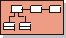
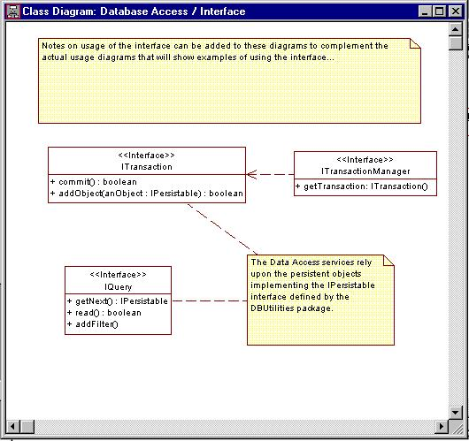
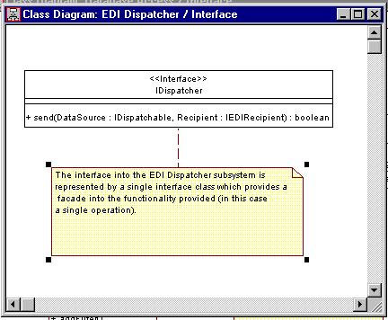

Standards: Interface
Diagrams

Class Diagram |
A class diagram showing the full interface of a package. |
| Related Information: |
|
Topics
Background 
A class diagram showing the interface (or public elements) of a package:
- if the package is an <<facade>>
this diagram will show all of the interfaces realized by the subsystem.
- if the package is an informally modeled <<subsystem>>
it will show the public classes and interfaces owned or realized by the subsystem.
- if the package is a <<utility>> it
will it will show the public classes and interfaces owned by the package
The interface diagram is often combined with the Main diagram.
This is the most important diagram in a package:
- It specifies the services offered by the package
- It defines the contract supported by the package
Note: The interfaces define the seams in the application. It is the interface
that the package's clients are
dependent upon.
Other Names
This diagram is sometimes referred to as:
Constraints
You should never attempt to combine this diagram with any other diagrams other than the
Main diagram.
Examples


|